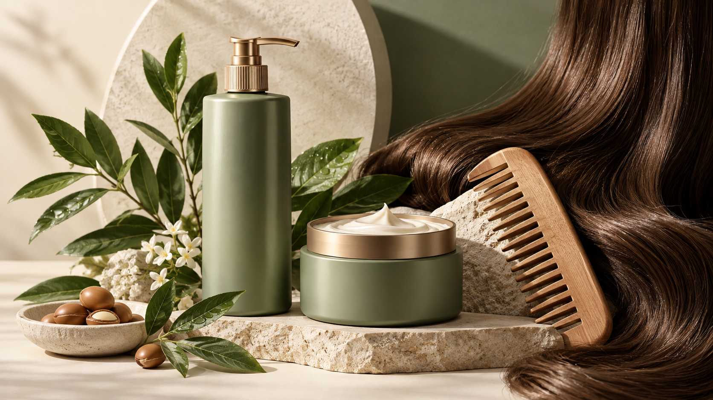

Blemish-prone skincare: separate oil control from acne treatment
A catalogue can address cleansing, surface shine and lightweight hydration without turning every product into an acne medicine. Treatment claims require a different market review.
Choose the right product formats
Keep a simple cleanser-serum-moisturizer starter kit. The clay mask addresses an occasional rinse-off need. The salicylic serum is held for its own classification and tolerance decision.
Understand the ingredients
Do not infer that every niacinamide formula suits every person. A community question about discomfort helps identify an FAQ, but cannot estimate irritation rates or identify the cause.
Conditioning systems / · PHA and salicylic systems / · Niacinamide / · Panthenol / B5 · Humectants / 、 · Hair oils and emollients / Haircare · Styling films, waxes and powders / Styling
- Niacinamide pigmentation study · Hakozaki et al., 2002Primary clinical and laboratory research
- Cosmetic, drug, or both? · US FDAUS classification guidance
Build a useful collection
Cleanser, balance serum and light moisturizer. Salicylic serum is a customizable option; clay mask is occasional rinse-off care.
BALANCE set · View the collection
Plan your private-label range
Begin with a clear customer need and choose formats with distinct roles. Compare application preferences, packaging and the place of each product in the routine. Your destination market and sales channel should guide the final assortment.
Discuss your range